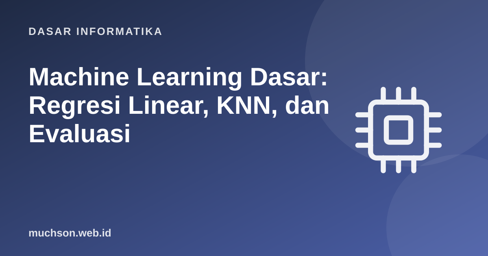

Beranda › Artikel › Dasar Informatika
Dasar InformatikaMachine Learning Dasar: Regresi Linear, KNN, dan Evaluasi
Pembelajaran mesin tampak misterius sampai Anda membangunnya dari nol. Pada intinya: kita punya data, memilih model dengan parameter, mengukur seberapa salah model itu, dan menyetel parameter agar kesalahannya mengecil. Dua model sederhana, regresi linear dan KNN, cukup untuk memahami hampir semua gagasan utama.
Sebaiknya sudah paham: Python dasar, fungsi dan list, aljabar dasar

Setelah membaca dan mencoba materi ini, Anda mampu:
- membedakan pembelajaran terbimbing, tak terbimbing, dan penguatan
- membangun regresi linear dengan fungsi kerugian dan gradient descent
- membangun klasifikasi k-nearest neighbors
- membagi data menjadi latih dan uji serta menjelaskan overfitting
- menghitung dan menafsirkan akurasi, presisi, recall, dan matriks konfusi
Gambaran besar
| Jenis | Data | Tujuan | Contoh |
|---|---|---|---|
| Terbimbing (supervised) | Masukan + label benar | Memprediksi label untuk data baru | Prediksi harga rumah (regresi), deteksi spam (klasifikasi) |
| Tak terbimbing (unsupervised) | Masukan tanpa label | Menemukan struktur | Pengelompokan pelanggan (clustering) |
| Penguatan (reinforcement) | Interaksi dan hadiah | Belajar kebijakan bertindak | Gim, robotika |
Regresi linear dengan gradient descent
Model: ŷ = w·x + b. Kita mencari w dan b sehingga garis paling mendekati data. Ukuran kesalahan: MSE (rata-rata kuadrat selisih). Gradient descent menyetel parameter sedikit demi sedikit ke arah yang menurunkan MSE.
import random
# data sintetis: harga = 3 * luas + 20 + derau
rng = random.Random(1)
luas = [rng.uniform(20, 120) for _ in range(60)]
harga = [3 * x + 20 + rng.gauss(0, 12) for x in luas] # satuan: juta Rp
n = len(luas)
def mse(w, b, xs):
return sum((w * x + b - y) ** 2 for x, y in zip(xs, harga)) / n
def latih(xs, laju, langkah, cetak):
w = b = 0.0
for t in range(1, langkah + 1):
gw = sum(2 * (w * x + b - y) * x for x, y in zip(xs, harga)) / n
gb = sum(2 * (w * x + b - y) for x, y in zip(xs, harga)) / n
w -= laju * gw; b -= laju * gb
if t in cetak: print(f" langkah {t:>3}: w={w:9.3f} b={b:9.3f} MSE={mse(w, b, xs):14.2f}")
return w, b
# 1) fitur mentah dengan laju belajar terlalu besar -> MENYIMPANG (kesalahan makin besar)
print("laju 0.001 pada fitur mentah:")
latih(luas, 0.001, 5, {1, 2, 3, 4, 5})
# 2) standarkan fitur (rata-rata 0, simpangan baku 1) -> belajar stabil dan cepat
mx = sum(luas) / n
sx = (sum((x - mx) ** 2 for x in luas) / n) ** 0.5
xs = [(x - mx) / sx for x in luas]
print("fitur distandarkan, laju 0.1 (w dan b pada langkah ini masih dalam satuan terstandar):")
ws, bs = latih(xs, 0.1, 100, {1, 5, 20, 100})
# kembalikan ke satuan asli: w * (x - mx)/sx + b = (w/sx) * x + (b - w*mx/sx)
w, b = ws / sx, bs - ws * mx / sx
my = sum(harga) / n
w_opt = sum((x - mx) * (y - my) for x, y in zip(luas, harga)) / sum((x - mx) ** 2 for x in luas)
b_opt = my - w_opt * mx
print(f"gradient descent : w={w:6.3f} b={b:6.3f}")
print(f"solusi tertutup : w={w_opt:6.3f} b={b_opt:6.3f}")
print(f"prediksi rumah 80 m2: {w * 80 + b:.1f} juta Rp")laju 0.001 pada fitur mentah:
langkah 1: w= 35.743 b= 0.445 MSE= 5861843.94
langkah 2: w= -324.713 b= -3.996 MSE= 596126549.19
langkah 3: w= 3310.341 b= 40.836 MSE=60625422651.94
langkah 4: w=-33347.693 b= -411.222 MSE=6165541333117.58
langkah 5: w=336333.527 b= 4147.644 MSE=627029031220610.12
fitur distandarkan, laju 0.1 (w dan b pada langkah ini masih dalam satuan terstandar):
langkah 1: w= 18.028 b= 44.516 MSE= 37043.68
langkah 5: w= 60.604 b= 149.646 MSE= 6328.18
langkah 20: w= 89.102 b= 220.016 MSE= 143.78
langkah 100: w= 90.141 b= 222.582 MSE= 136.12
gradient descent : w= 3.053 b=13.967
solusi tertutup : w= 3.053 b=13.967
prediksi rumah 80 m2: 258.2 juta Rp
Laju belajar (learning rate) adalah pilihan penting: terlalu kecil membuat belajar sangat lambat, terlalu besar membuat parameter melompat melewati titik terbaik dan bahkan menyimpang (kesalahan membesar). Contoh di atas memperlihatkan keduanya: laju 0,001 pada fitur mentah menyimpang, sedangkan fitur yang distandarkan stabil dengan laju 0,1. Karena itu data hampir selalu distandarkan sebelum dilatih.
Klasifikasi dengan k-nearest neighbors (KNN)
KNN tidak "belajar" parameter. Untuk data baru, ia mencari k data latih terdekat dan memilih label mayoritas. Intuisi: hal yang mirip cenderung berlabel sama.
import random, math
from collections import Counter
rng = random.Random(3)
# dua kelas titik 2D: "A" berpusat di (2,2), "B" berpusat di (5,5)
data = [((rng.gauss(2, 1), rng.gauss(2, 1)), "A") for _ in range(50)] + \
[((rng.gauss(5, 1), rng.gauss(5, 1)), "B") for _ in range(50)]
rng.shuffle(data)
latih, uji = data[:70], data[70:] # 70% latih, 30% uji
def knn(titik, data_latih, k=5):
terdekat = sorted(data_latih, key=lambda d: math.dist(titik, d[0]))[:k]
return Counter(label for _, label in terdekat).most_common(1)[0][0]
benar = sum(1 for x, y in uji if knn(x, latih) == y)
print(f"akurasi pada data uji: {benar}/{len(uji)} = {benar / len(uji) * 100:.1f}%")
print("titik (2,2) ->", knn((2, 2), latih), "| titik (5,5) ->", knn((5, 5), latih), "| titik (3.5,3.5) ->", knn((3.5, 3.5), latih), "(di perbatasan)")akurasi pada data uji: 29/30 = 96.7%
titik (2,2) -> A | titik (5,5) -> B | titik (3.5,3.5) -> B (di perbatasan)
Overfitting: menghafal vs belajar
Model yang terlalu rumit menghafal derau pada data latih sehingga gagal pada data baru. Pada KNN, k = 1 menghafal setiap titik; k terlalu besar terlalu kasar. Kita pilih k dengan melihat kinerja pada data yang tidak dipakai melatih.
import random, math
from collections import Counter
rng = random.Random(11)
def buat(n):
out = []
for _ in range(n):
label = rng.choice("AB")
pusat = 2 if label == "A" else 3.2 # kelas tumpang tindih sehingga ada derau nyata
out.append(((rng.gauss(pusat, 1.1), rng.gauss(pusat, 1.1)), label))
return out
latih, uji = buat(120), buat(400)
def knn(t, data, k):
terdekat = sorted(data, key=lambda d: math.dist(t, d[0]))[:k]
return Counter(l for _, l in terdekat).most_common(1)[0][0]
def akurasi(data_uji, data_latih, k):
return sum(knn(x, data_latih, k) == y for x, y in data_uji) / len(data_uji)
print(" k akurasi latih akurasi uji")
for k in (1, 3, 5, 9, 15, 31, 61):
print(f"{k:>2} {akurasi(latih, latih, k) * 100:6.1f}% {akurasi(uji, latih, k) * 100:6.1f}%") k akurasi latih akurasi uji
1 100.0% 65.8%
3 90.0% 69.2%
5 83.3% 71.8%
9 82.5% 71.5%
15 76.7% 72.2%
31 77.5% 72.5%
61 76.7% 74.0%
Metrik evaluasi klasifikasi
| Metrik | Rumus | Pertanyaan |
|---|---|---|
| Akurasi | (TP + TN) / total | Berapa persen tebakan benar? |
| Presisi | TP / (TP + FP) | Dari yang diprediksi positif, berapa yang benar-benar positif? |
| Recall (sensitivitas) | TP / (TP + FN) | Dari yang sebenarnya positif, berapa yang tertangkap? |
| F1 | 2·P·R / (P + R) | Rata-rata harmonik presisi dan recall |
# kasus: deteksi penipuan, hanya 2% transaksi yang penipuan
TP, FN = 12, 8 # dari 20 penipuan: 12 tertangkap, 8 lolos
FP, TN = 30, 950 # dari 980 transaksi normal: 30 salah ditandai, 950 benar
total = TP + FN + FP + TN
akurasi = (TP + TN) / total
presisi = TP / (TP + FP)
recall = TP / (TP + FN)
f1 = 2 * presisi * recall / (presisi + recall)
print(f"akurasi {akurasi:.3f} | presisi {presisi:.3f} | recall {recall:.3f} | F1 {f1:.3f}")
# model "malas": menyatakan semua transaksi normal
akurasi_malas = (0 + (FP + TN)) / total
print(f"model yang tidak pernah mendeteksi penipuan: akurasi {akurasi_malas:.3f} (tampak bagus!), recall 0.000")akurasi 0.962 | presisi 0.286 | recall 0.600 | F1 0.387
model yang tidak pernah mendeteksi penipuan: akurasi 0.980 (tampak bagus!), recall 0.000
Aturan kejujuran evaluasi: jangan menilai model dengan data yang dipakai melatihnya, dan jangan menyetel berulang-ulang terhadap data uji (itu membocorkan data uji ke model). Pisahkan data latih, validasi (untuk memilih model), dan uji (satu kali di akhir). Hati-hati juga terhadap kebocoran data (data leakage) dan bias pada data.
1. Apa yang terjadi bila laju belajar gradient descent terlalu besar?
2. Mengapa fitur sebaiknya distandarkan untuk KNN?
3. Hitung presisi dan recall: TP=40, FP=10, FN=20.
4. Mengapa data uji tidak boleh dipakai untuk memilih k terbaik berulang kali?
- Pembelajaran mesin: data + model berparameter + ukuran kesalahan + penyetelan.
- Regresi linear dengan gradient descent menyetel w dan b untuk memperkecil MSE.
- KNN mengklasifikasi lewat tetangga terdekat; k mengatur kompleksitas.
- Overfitting: bagus pada data latih, buruk pada data baru; ukur dengan data uji.
- Pilih metrik sesuai biaya kesalahan; akurasi menyesatkan pada data tak seimbang.
Tanya jawab
Pustaka apa yang dipakai di dunia nyata?
Apa bedanya AI, machine learning, dan deep learning?
Bagaimana dengan model bahasa besar?
Referensi
- James, Witten, Hastie, Tibshirani, An Introduction to Statistical Learning (gratis)
- scikit-learn: User Guide
- Andrew Ng, Machine Learning Specialization (Coursera/Stanford)
- Géron, Hands-On Machine Learning with Scikit-Learn, Keras, and TensorFlow (O'Reilly)